0.简介
Mathematica在同类计算机辅助数学工具中独树一帜的一个特点是它的高级图形功能。
可以用InputForm来查看图的本质
ListPlot[{1, 2, 5, 8}] // InputForGraphics[{{}, {{{<<2>>}}, {<<2>>}, {<<2>>}}, {{}, {}}},{<<17>>}]1.笛卡尔坐标系中的画图
问题
你想去画一个函数图形
解决方案
Plot[函数,{变量,min,max}]
GraphicsRow[{
Plot[Erf[x], {x, -2, 2}],
Plot[{0.5 Sin@(2 x), Cos@(3 x)}, {x, -Pi, Pi}]}]图像：
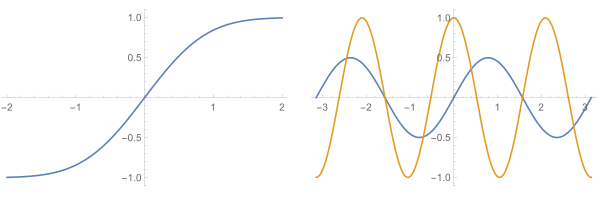
讨论
Plot有许多选项，这里我们可以列出来。
Partition[Options[Plot], 4] // TableFormAlignmentPoint->Center AspectRatio->1/GoldenRatio Axes->True AxesLabel->None
AxesOrigin->Automatic AxesStyle->{} Background->None BaselinePosition->Automatic
BaseStyle->{} ClippingStyle->None ColorFunction->Automatic ColorFunctionScaling->True
ColorOutput->Automatic ContentSelectable->Automatic CoordinatesToolOptions->Automatic DisplayFunction:>$DisplayFunction
Epilog->{} Evaluated->Automatic EvaluationMonitor->None Exclusions->Automatic
ExclusionsStyle->None Filling->None FillingStyle->Automatic FormatType:>TraditionalForm
Frame->False FrameLabel->None FrameStyle->{} FrameTicks->Automatic
FrameTicksStyle->{} GridLines->None GridLinesStyle->{} ImageMargins->0.
ImagePadding->All ImageSize->Automatic ImageSizeRaw->Automatic LabelingSize->Automatic
LabelStyle->{} MaxRecursion->Automatic Mesh->None MeshFunctions->{#1&}
MeshShading->None MeshStyle->Automatic Method->Automatic PerformanceGoal:>$PerformanceGoal
PlotLabel->None PlotLabels->None PlotLegends->None PlotPoints->Automatic
PlotRange->{Full,Automatic} PlotRangeClipping->True PlotRangePadding->Automatic PlotRegion->Automatic
PlotStyle->Automatic PlotTheme:>$PlotTheme PreserveImageOptions->Automatic Prolog->{}
RegionFunction->(True&) RotateLabel->True ScalingFunctions->None TargetUnits->Automatic在绘制两个或多个函数时，你可能希望显式地设置每个绘图行的样式。
你还可以使用坐标轴来隐藏一个或两个轴，就像我在第二个和第四个图中所做的那样。
你可以使用AxesLabel标记一个或两个轴，并使用LabelStyle控制格式
{Plot[{0.5 Sin[2 x], Cos[3 x], Sin@x - Cos@(2 x)}, {x, -Pi, Pi},
PlotStyle -> {Directive[Black, Thin], Directive[Black, Thick],
Directive[Black, Dashed]}, ImageSize -> Small],
Plot[Erf[x], {x, -2, 2}, Axes -> {False, True}]},
{Plot[0.5 Sin[2 x], {x, 0, 2 Pi},
AxesLabel -> {"Angle", "Amplitude"},
LabelStyle -> Directive[Bold], ImageSize -> Small],
Plot[0.5 Sin[2 x], {x, 0, 2 Pi}, Axes -> False, ImageSize -> Small]
}}] 图像：
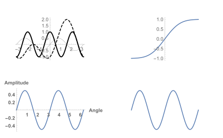
图像的命名PlotLabel
这个命令是命名图形的名字的
GraphicsRow[{
Plot[Sin@x, {x, -2 Pi, 2 Pi}, PlotLabel -> "正弦函数图像"],
Plot[Cos@x, {x, -2 Pi, 2 Pi}, PlotLabel -> "余弦函数图像"]
}]图像
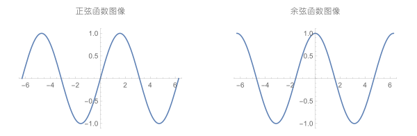
图像的网格Grid
可以使用Grid给图像加网格，网格的样式可以由函数自动生成，也可自定义。
GraphicsRow[{
Plot[Tan@x, {x, -Pi/2, Pi/2}, GridLines -> Automatic,
PlotLabel -> "系统自动生成的网格"],
Plot[Tan@x, {x, -Pi/2, Pi/2},
GridLines -> {Range[-Pi/2, Pi/2, Pi/4], Range[-6, 6, 2]},
PlotLabel -> "自定义的网格"]
}]图像：
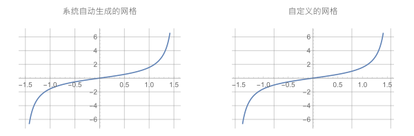
图像的边框 Frame ,FrameStyle, FrameLabe
Frame、FrameStyle和FrameLabel允许你使用边框和标签对图形进行注释。
GraphicsGrid[
GraphicsRow[{
Plot[Exp[Sin@x], {x, 0, 2 Pi}, Frame -> True, FrameLabel -> "\!\(\*SuperscriptBox[\(e\), \(sin\\\ x\)]\)"],
Plot[Exp[Cos@x], {x, 0, 2 Pi}, Frame -> True,
FrameLabel -> "\!\(\*SuperscriptBox[\(e\), \(cosx\)]\)",
FrameStyle -> Directive[Gray, Thick]]
}]图像：
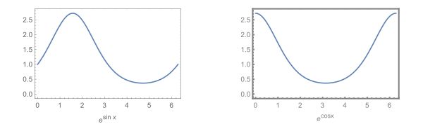
图像突出点Mesh
Mesh允许你在图中高亮显示特定的点。Mesh->Full所有将突出点采样而绘制图形.Mesh->n将使用n 个同样距离的分隔线,来突出图像.Mesh->Automatic将使用等距的点。
GraphicsGrid[
Partition[Table[
Plot[0.5 Sin[2 x], {x, 0, 2 Pi}, Mesh -> m, Frame -> True,
ImageSize -> Small,
PlotLabel -> "Mesh->" <> ToString@m],
{m, {None, Automatic, All, Full, 16, 50}}], 2], Spacings -> 0]图像：
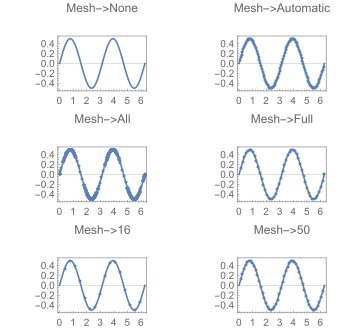
图像的范围PlotRange
PlotRange是一个重要的选项，它可以控制图中包含哪些坐标。Automatic让Mathematica决定最好的选择，所有指定所有点实际绘制.Full指定整个范围。
GraphicsGrid[Partition[
Table[
Plot[Sqrt[100. - x^2], {x, 0, 100},
PlotRange -> r, Frame -> True,
FrameLabel -> "绘图范围" <> ToString@r],
{r, {Automatic, All, Full, {{0, 20}, {0, 20}}}}
], 2], Spacings -> 0]图像：
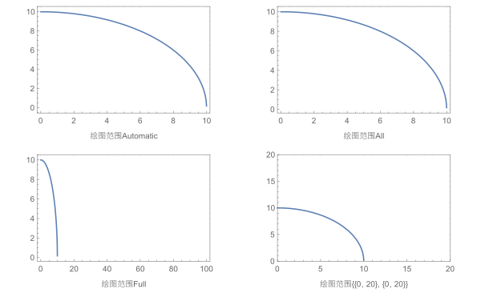
图像宽高比AspectRatio
AspectRatio控制着地块的宽高比
默认值为GoldenRatio（黄金比例），Automatic的值使用坐标值来确定长宽比。
GraphicsGrid@Partition[
Table[
Plot[Sqrt[100. - x^2], {x, 0, 10}, AspectRatio -> a, Frame -> True,
FrameLabel -> "宽高比是" <> ToString[TraditionalForm@a]],
{a, {GoldenRatio, Automatic, 1.2, 0.4}}], 2]图像：
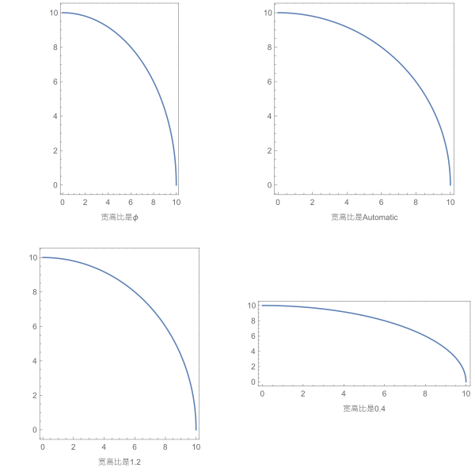
图像的填充Filling
有时候你想去强调你的图像的某个部位，或者说两条曲线围在一起的面积。
此时你用Filling可以做到这一点
你可以将其设置为“Top(顶部)”以从曲线向上填充,“Bottom(底部)”以从曲线向下填充，“Axis(轴)”以从轴向曲线填充，或设置为数值以从曲线向任意y方向的值填充。
GraphicsGrid@Partition[
Table[Plot[Sin@x, {x, 0, 2 Pi}, Filling -> f, Frame -> True,
FrameLabel -> "填充是" <> ToString@f], {f, {Top, Bottom, Axis,
0.5}}], 2]图像：
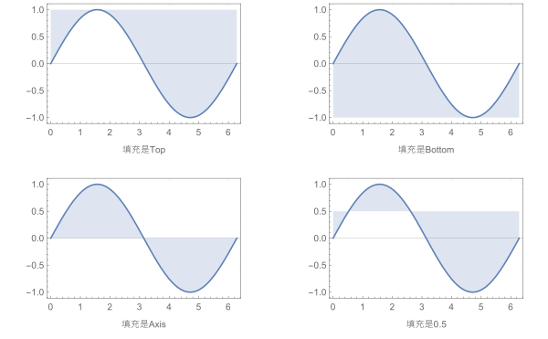
FillingStyle允许你控制填充的颜色和不透明度
当多个函数的区域重叠时，指定不透明度是很有用的。
Plot[{Cosh[x], Cosh[3 x]}, {x, -1, 1}, Filling -> Top,
PlotStyle -> {Black, Blue},
FillingStyle -> Directive[Pink, Opacity[0.5]], ImageSize -> 600]图像
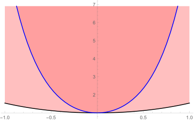
你也可以用数字指定填充的位置
mathematica
Plot[{Sin@x, 2 Sin[x + 1] + 3, 3 Sin[x + 2] + 6}, {x, 0, 2 Pi},
Filling -> {1 -> {{2}, Red}, 2 -> {{3}, Yellow}}, ImageSize -> 500]图像
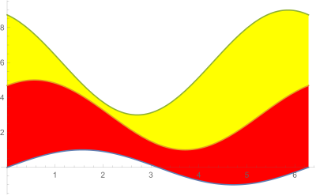